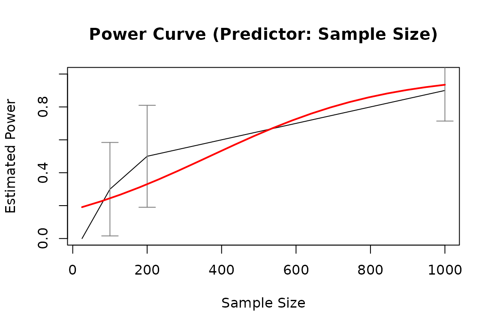
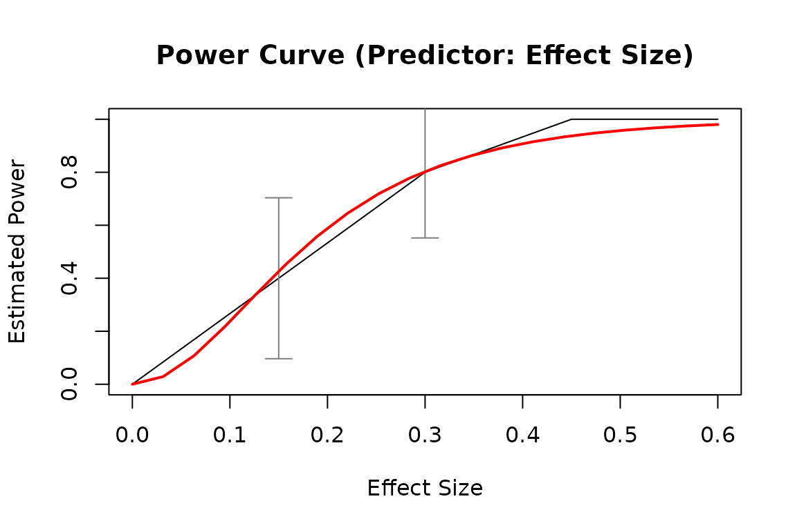

Plotting the results
in a 'power_curve' object, such as the
estimated power against sample size,
or the results of power4test_by_n()
or power4test_by_es().
Usage
# S3 method for class 'power_curve'
plot(
x,
what = c("ci", "power_curve"),
main = paste0("Power Curve ", "(Predictor: ", switch(x$predictor, n = "Sample Size", es
= "Effect Size"), ")"),
xlab = switch(x$predictor, n = "Sample Size", es = "Effect Size"),
ylab = "Estimated Power",
pars_ci = list(),
type = "l",
ylim = c(0, 1),
ci_level = 0.95,
...
)
# S3 method for class 'power4test_by_n'
plot(
x,
main = "Estimated Power vs. Sample Size",
xlab = "Sample Size",
ylab = "Estimated Power",
pars_ci = list(),
type = "l",
ylim = c(0, 1),
ci_level = 0.95,
...
)
# S3 method for class 'power4test_by_n'
plot(
x,
main = "Estimated Power vs. Sample Size",
xlab = "Sample Size",
ylab = "Estimated Power",
pars_ci = list(),
type = "l",
ylim = c(0, 1),
ci_level = 0.95,
...
)
# S3 method for class 'power4test_by_es'
plot(
x,
main = paste0("Estimated Power vs. Effect Size / Parameter (", attr(x[[1]],
"pop_es_name"), ")"),
xlab = paste0("Effect Size / Parameter (", attr(x[[1]], "pop_es_name"), ")"),
ylab = "Estiamted Power",
pars_ci = list(),
type = "l",
ylim = c(0, 1),
ci_level = 0.95,
...
)Arguments
- x
The object to be plotted. It can be a
power_curveobject, the output ofpower_curve(). It can also be the output ofpower4test_by_n()orpower4test_by_es().- what
A character vector of what to include in the plot. Possible values are
"ci"(confidence intervals for the estimated sample size) and"power_curve"(the crude power curve, if available). The default values depend on the type ofx.- main
The title of the plot.
- xlab, ylab
The labels for the horizontal and vertical axes, respectively.
- pars_ci
A named list of arguments to be passed to
arrows()to customize the drawing of the confidence intervals.- type
An argument of the default plot method
plot.default(). Default is"l". Seeplot.default()for other options.- ylim
A two-element numeric vector of the range of the vertical axis.
- ci_level
The level of confidence of the confidence intervals, if requested. Default is
.95, denoting 95%.- ...
Optional arguments. Passed to
plot()when drawing the base plot.
Details
It currently plots the relation
between estimated power and
the predictor. Other elements
can be requested (see the argument
what), and they can be customized
individually.
Examples
# Specify the population model
model_simple_med <-
"
m ~ x
y ~ m + x
"
# Specify the effect sizes (population parameter values)
model_simple_med_es <-
"
y ~ m: l
m ~ x: m
y ~ x: s
"
# Simulate datasets to check the model
sim_only <- power4test(nrep = 10,
model = model_simple_med,
pop_es = model_simple_med_es,
n = 50,
fit_model_args = list(fit_function = "lm"),
do_the_test = FALSE,
iseed = 1234,
parallel = FALSE,
progress = FALSE)
# By n: Do a test for different sample sizes
out1 <- power4test_by_n(sim_only,
nrep = 10,
test_fun = test_parameters,
test_args = list(par = "y~x"),
n = c(25, 100, 200, 1000),
by_seed = 1234,
parallel = FALSE,
progress = FALSE)
pout1 <- power_curve(out1)
pout1
#> Call:
#> power_curve(object = out1)
#>
#> Predictor: n (Sample Size)
#>
#> Model:
#>
#> Call: stats::glm(formula = reject ~ x, family = "binomial", data = reject1)
#>
#> Coefficients:
#> (Intercept) x
#> -1.550280 0.004213
#>
#> Degrees of Freedom: 39 Total (i.e. Null); 38 Residual
#> Null Deviance: 54.55
#> Residual Deviance: 38.37 AIC: 42.37
plot(pout1)

# By pop_es: Do a test for different population values of a model parameter
out2 <- power4test_by_es(sim_only,
nrep = 10,
test_fun = test_parameters,
test_args = list(par = "y~x"),
pop_es_name = "y ~ x",
pop_es_values = seq(0, .7, .15),
by_seed = 1234,
parallel = FALSE,
progress = FALSE)
pout2 <- power_curve(out2)
plot(pout2)
